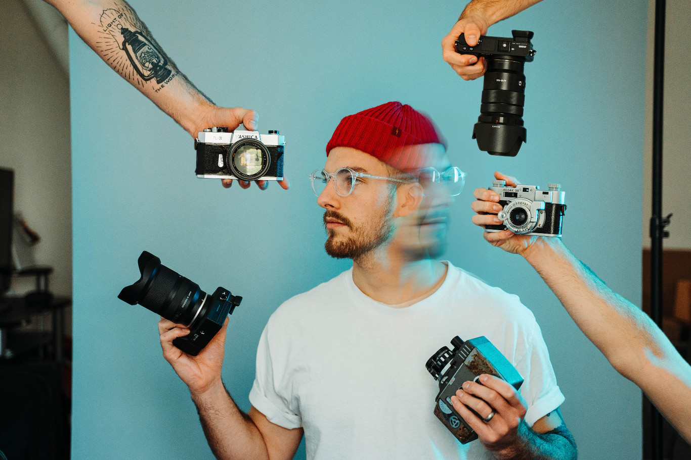

QUIÉN SOY?
Nací en la ciudad de Buenos Aires, Argentina y soy fotógrafo profesional. Me gradué como Licenciado en Publicidad en la UCES. Viví en Miami por 2 años, primero obteniendo la licencia de agente de bienes raices en el estado de Florida y luego me especialice en ayudar a Agentes de bienes raíces a generar contenido en sus redes sociales y en todas sus necesidades de comunicación. Actualmente, me especializo en la fotografía publicitaria de Inmuebles y en eventos exteriores como casamientos, cumpleaños, eventos deportivos, etc.
